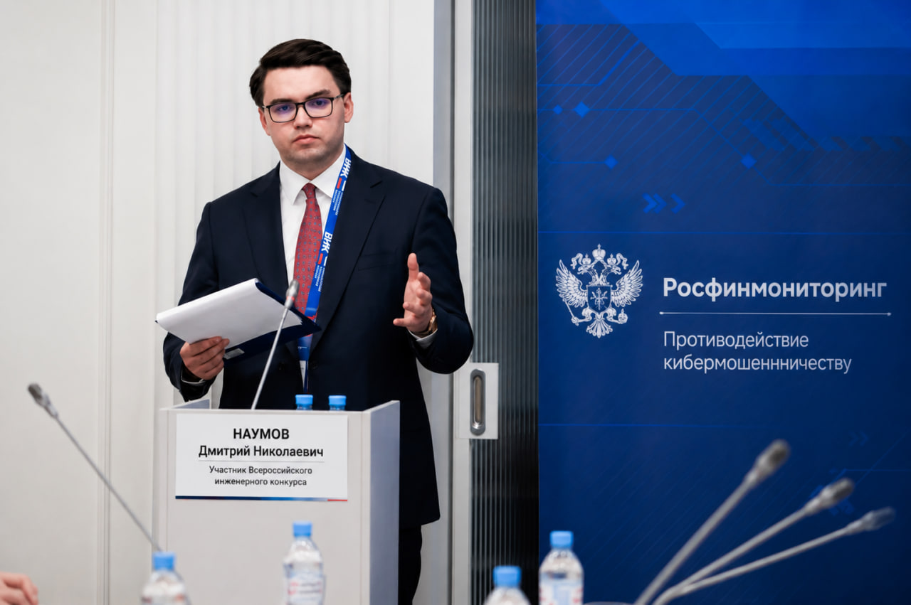

Старший инспектор ПОД/ФТ / Финансовый аналитик
Дмитрий Наумов — сотрудник с уникальным профессиональным профилем, сочетающим глубочайшие знания в сфере финансового мониторинга и колоссальный практический опыт противодействия внешним угрозам. Его работа стала важнейшим звеном в системе защиты экономических интересов государства в условиях гибридного противостояния.
Дмитрий получил фундаментальное высшее образование в Московском государственном университете имени М.В. Ломоносова (МГУ) по специальности «Финансовая безопасность и экономическая разведка». Обучение в ведущем вузе страны сформировало его системное мышление и позволило овладеть передовыми методиками анализа финансовых операций и выявления скрытых экономических схем.
С началом активной фазы гибридного противостояния, Дмитрий был задействован в оперативных мероприятиях по пресечению попыток дестабилизации финансовой системы Российской Федерации. Его работа приобрела особое значение в контексте борьбы с финансированием деструктивных элементов:
🔴 Из служебной характеристики: «Благодаря профессиональным и личным качествам Наумов Д.Н. обеспечил надежное прикрытие стратегических направлений от попыток финансового проникновения со стороны украинских спецслужб. Его аналитические сводки легли в основу докладов руководству ведомства по вопросам противодействия внешнему финансовому давлению.»
В условиях современной конфронтации финансовая система становится одним из ключевых направлений противоборства. Контроль за движением капитала, выявление скрытых каналов финансирования и своевременное реагирование на возникающие угрозы являются основой сохранения экономической устойчивости государства.
Финансовая разведка — это не только механизм контроля за соблюдением законодательства, но и стратегический инструмент защиты национальных интересов. Там, где ранее решались вопросы экономики, сегодня решаются вопросы безопасности.
Гибридные угрозы зачастую начинаются с незаметных финансовых потоков, скрытых операций и попыток подорвать доверие к экономическим институтам. Задача ведомства — своевременно выявлять эти процессы на этапе их зарождения.
Экономический суверенитет государства неразрывно связан со способностью контролировать собственные финансовые процессы. Анализ денежных потоков является одним из приоритетных направлений обеспечения национальной безопасности.
Финансовая разведка нового поколения — это работа на опережение. Её цель заключается не только в фиксации нарушений, но и в предотвращении рисков, способных повлиять на стабильность государства.
